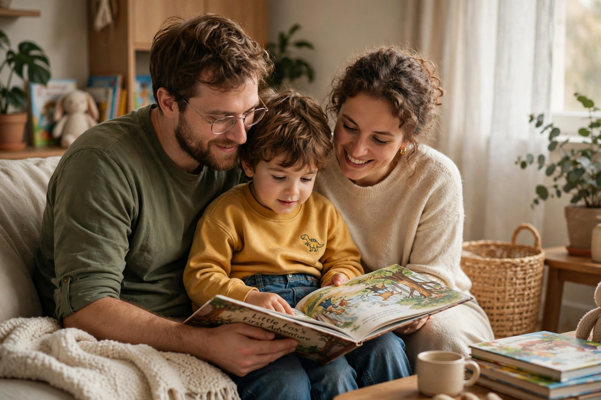

Parenting or child rearing promotes and supports the physical, cognitive, social, emotional and educational development of a child from infancy to adulthood. It is usually carried out by biological parents, but also by adoptive and foster parents, guardians, extended family, and institutions.

Diana Baumrind's research identified parenting styles based on demandingness and responsiveness: authoritative (high/high), authoritarian (high control, low warmth), permissive (low control, high warmth), later extended by Maccoby and Martin with neglectful. Authoritative parenting is commonly associated with favourable outcomes, though effects vary by culture and context.
Practices include attachment and bonding in infancy, discipline and scaffolding in childhood, and monitoring with increasing autonomy in adolescence. Parenting is influenced by socioeconomic factors, culture, parental mental health and social support, and is studied in developmental psychology and promoted through parenting programmes.
See also: Attachment theory, Child development